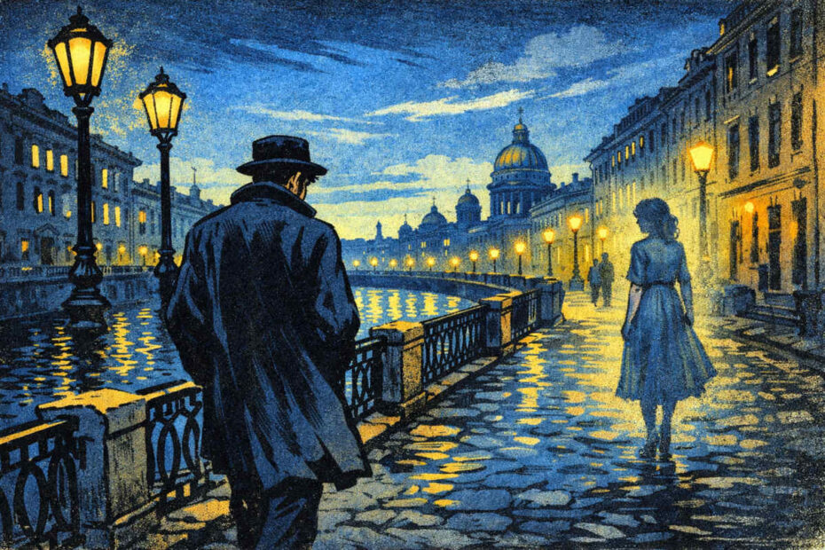
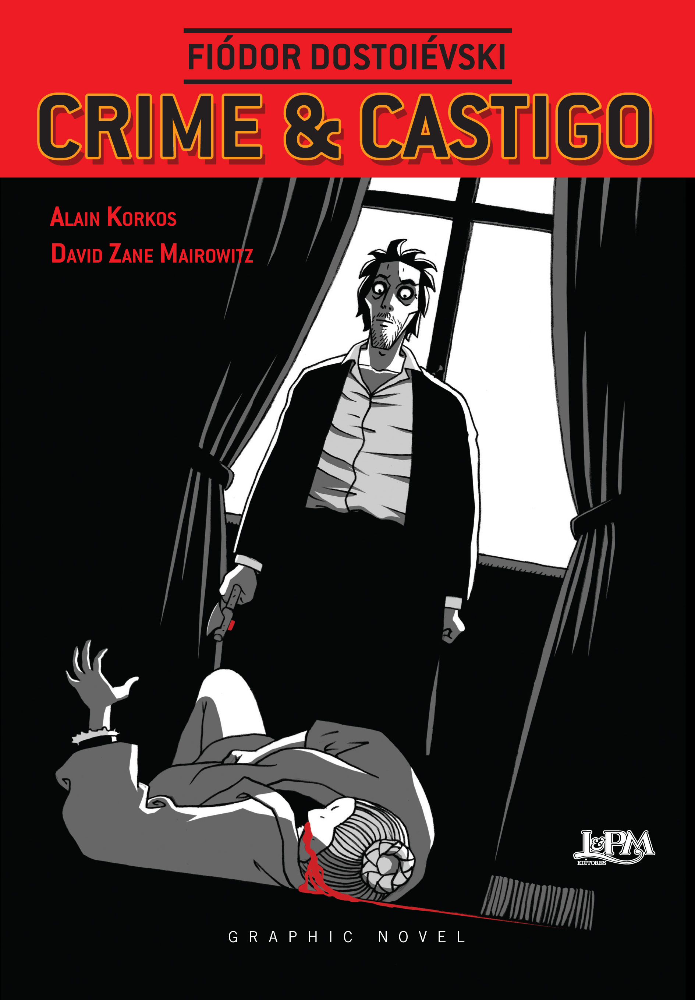
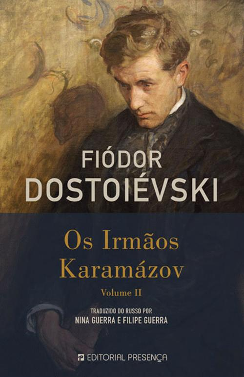
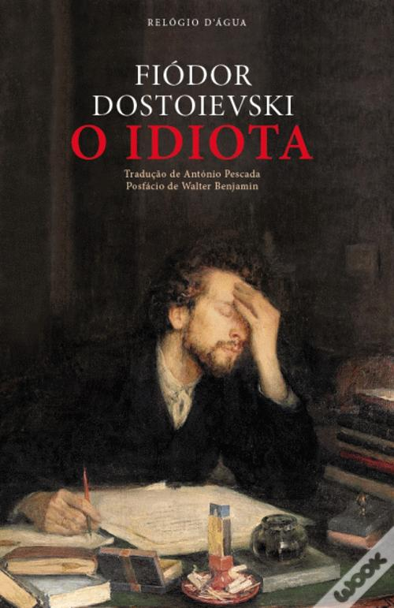
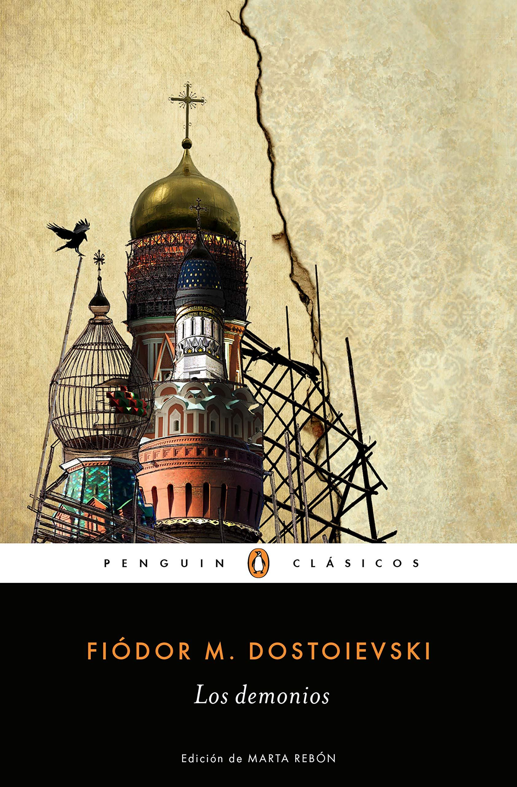
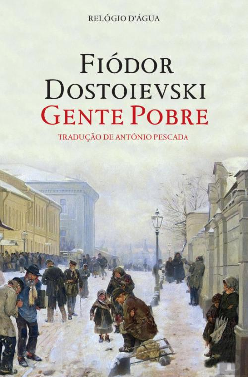
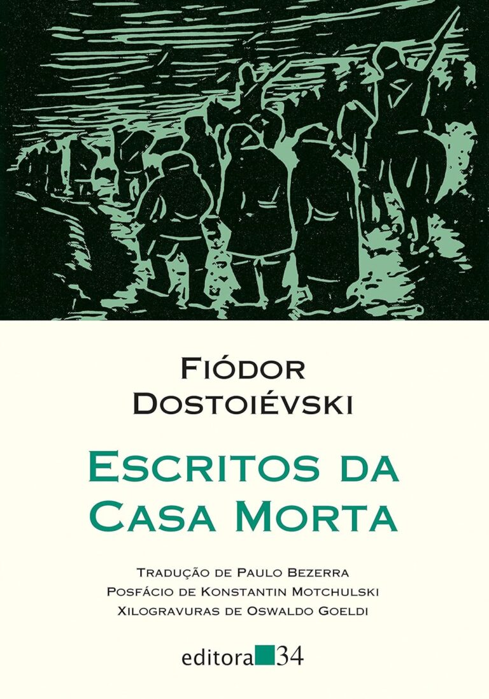
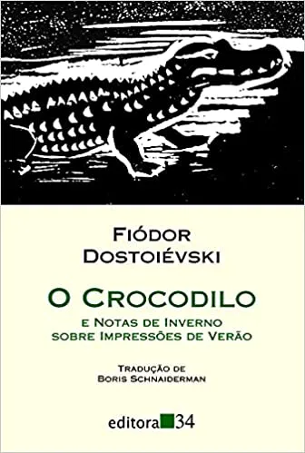

Quem foi o personagem sonhador?
Em Noites Brancas, de Fiódor Dostoiévski, o Sonhador é um personagem solitário, sensível e muito imaginativo. Ele prefere viver em fantasias do que na realidade, idealiza o amor e tem dificuldade de se conectar com as pessoas. Apesar disso, demonstra sentimentos intensos, o que o torna vulnerável a decepções.
Obras recomendadas:
Crime e Castigo

Esse livro fala sobre Fala sobre culpa, moralidade e a mente de um assassino. Tem suspense psicológico e reflexões filosóficas profundas. Muitos leitores consideram a obra-prima mais “acessível” dele.
Os Irmãos Karamázov

Esse livro Mistura filosofia, religião, debates morais e drama familiar. É mais longo e complexo, mas extremamente marcante.
O Idiota

Esse livro Conta a história do príncipe Míchkin, um homem extremamente bondoso tentando viver em uma sociedade cheia de egoísmo e manipulação. Tem personagens muito humanos e emocionais.
Memorias do Subsolo

Esse livro é uma leitura mais existencialista e influenciou autores como Nietzsche e Sartre. Ótimo se você gosta de reflexões psicológicas
Os Demônios

Esse livro conta radicalismo, fanatismo e caos social. É um dos mais difíceis, mas muito admirado.
Gente pobre

Esse livro Explora História em cartas entre duas pessoas pobres que enfrentam dificuldades e solidão na Rússia.
A Casa dos Mortos

Esse livroMostra a vida de prisioneiros na Sibéria, inspirado na prisão real do autor.
Notas de Inverno sobre Impressões de Verão

Esse livro é um Relato da viagem de Dostoiévski pela Europa com críticas à sociedade europeia.